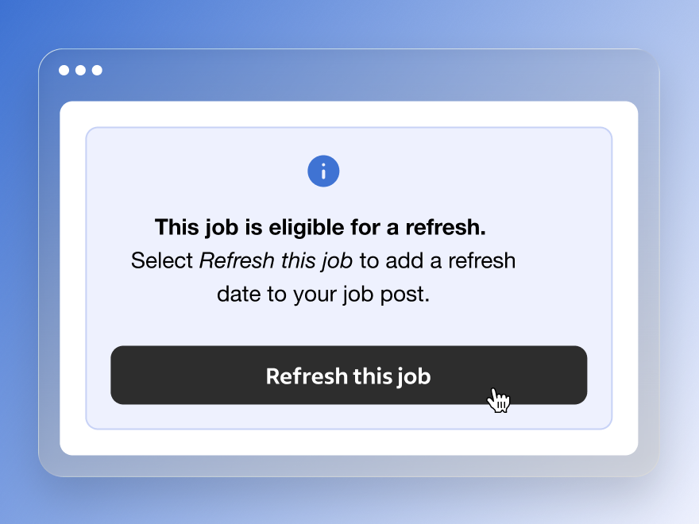
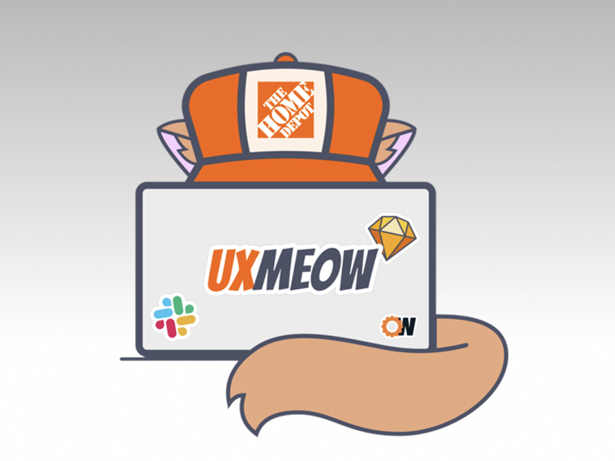

Classroom Assignment Management
Renaissance · Senior UX Designer
Eight finished. Which two needed help?
A priority view brought student identities into the assignment hub.
Shipped in six weeks; fewer trips to separate reports.
Read the story →I'm a UX and product leader with 10+ years of experience turning complex problems into useful, scalable products for companies including Amazon, The Home Depot, HP, and AT&T.

Selected product stories
Renaissance · Senior UX Designer
Eight finished. Which two needed help?
A priority view brought student identities into the assignment hub.
Shipped in six weeks; fewer trips to separate reports.
Read the story →
Indeed · Senior UX Designer
The job was still open. Its visibility had faded.
Employers could refresh an existing job instead of closing and reposting it.
Free for six months, then included in Sponsored Jobs.
Read the story →
The Home Depot · Staff-level product design
The wait was short. The uncertainty was not.
A clearer check-in helped customers understand what happened next.
A 50-store pilot reported clearer expectations and fewer fulfillment-change calls.
Read the story →Leadership in practice

The Home Depot · Staff-level influence
Connected interns, mentors, and innovation projects—and helped teams put evidence and accessibility insights into practice.
Six to 16 project teams; three participants accepted UX-team roles.
Read the story →More product work

Amazon · UX Designer II
A first-claim email became a learning opportunity with a practical next step.
Read the story →
The Home Depot · Staff-level product design
Price adjustments that preserved order context and supported associate judgment.
Read the story →
Green Loom · Co-founder
A catalog model connecting product identity, stock, store offers, and lab evidence.
Read the story →Tools developed through my work

Open-source method · Author
Connect product evidence, models, requirements, and interface decisions.
Used in classroom workshops; the public method remains in development.
Read the story →
Open-source agent system · Author
Give specialists explicit responsibilities and keep decisions with the human.
Public v0.1 with a replayable fictional demonstration.
Read the story →About Aaron
My work has taken me through classrooms, marketplaces, stores, and enterprise tools. I’m currently a Senior UX Designer at Renaissance, connecting research and product models with the details people need to act.
I’m interested in Staff and Principal IC work where I can shape direction, stay involved in delivery, and help others make better decisions along the way.
Explore my experience →